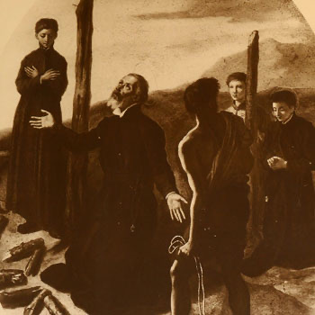

Isusovački blaženici
Vjeroučitelj · Mučenik
Bl. Petar Onizzuca Sandaju
1604. – 1622.
Mladi japanski vjeroučitelj pomagao je ocu Navarri u vrijeme progona. U zatočeništvu je ostao vjeran Kristu te je prije mučeništva položio isusovačke zavjete.
Tekst je preveden i prilagođen uz pomoć umjetne inteligencije.

Izvor slike
- Spomendan
- 1. studenoga
- Zaštitništvo
- Nije navedeno u izvoru
- Životni vijek
- 1604. – 1622.
- Djelovanje
- Obrazovanje i poučavanje vjere · Progoni i progonstvo · Mučeništvo
- Razdoblje
- 17. stoljeće
- Podrijetlo
- Japan
- Godina rođenja
- 1604.
- Godina smrti
- 1622.
U kalendaru zbirke koristi se dan smrti. Taj datum nije zasebna potvrda liturgijskoga spomendana.
Životopis
Petar Onizzuca Sandaju rođen je 1604. u Japanu. Potjecao je iz obitelji koja je pomagala progonjenim svećenicima: njegov im je otac pružao sklonište. Još kao mladić postao je katehist i pratilac svećenika Petra Pavla Navarre. U istome su apostolatu surađivali Dionizije Fujishima i Klement Yuemon.
Potkraj 1621. pripadnici skupine zajedno su uhićeni i predani daimjou Arime. On je cijenio zatočenike i razmatrao njihovo oslobođenje ako se odreknu vjere, što su odbili. Pokušaj da ih potajno pošalje u Macao nije ostvaren: stigao je nalog za pogubljenje. Osobna mladost Onizuke razlikuje ga od starijih pratilaca; širi opis Navarrina višegodišnjega rada ne znači da je dječak od početka sudjelovao u svakome njegovu pothvatu.
Na svetkovinu Svih svetih, 1. studenoga 1622., Navarra je slavio posljednju misu. Petar i Dionizije tijekom nje položili su isusovačke zavjete. Dopunski singapurski prikaz opisuje zajednički odlazak na stratište uz marijanske litanije i odgovore pratilaca. Četvorica su potom spaljena. Petar je u tom trenutku imao približno osamnaest godina. Bio je katehist i novoprimljeni isusovac, a ne svećenik; njegovo mučeništvo uključuje obiteljsko gostoprimstvo misionarima, osobnu katehetsku službu i zavjete položene pred smrt.
Tekst je preveden i prilagođen uz pomoć umjetne inteligencije.
Pročitaj više na izvornoj stranici ↗